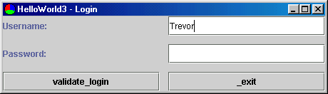
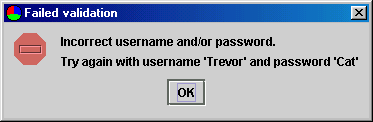
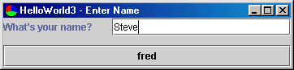

Building on the "Hello World 2" example, this example demonstrates use of a hierarchy of Controllers, each of which handles a discrete set of functionality.



The application is the same as "Hello World 2" except that before reaching the first view, a new controller is invoked to validate the user's identity via a login process. After successful validation, the application moves through the same functionality as the original "Hello World 2".
This is the same launcher as used in "Hello World 2".
This is the Hello2Controller from "Hello World 2" with the addition of different startup logic that kicks off a child LoginController, and a handler for the LoginController.LOGIN_OK Control sent from the child after a successful user login. On LOGIN_OK, the child is shutdown (which does hideView() and removes it from the chain of responsibility) and Hello3Controller moves through the same functionality as Hello2Controller.
public class Hello3Controller extends BasicController {
public static final String GOT_NAME = "Enter";
public static final String CHANGE_TO_FRED = "Change to Fred";
private LoginController loginController;
public Hello3Controller() {
setModel(new Hello3Model());
setView(new Hello3View1());
}
protected void doHandleControl(Control inControl) throws ControlException {
if (inControl.matchesID(GOT_NAME)) {
doGotName();
} else if (inControl.matchesID(CHANGE_TO_FRED)) {
doChangeToFred();
} else if (inControl.matchesID(LoginController.LOGIN_OK)) {
doLoginOK();
}
}
protected void doGotName() {
setView(new Hello3View2()); // This new View will bind to the Controller's model
showView();
}
protected void doChangeToFred() {
((Hello3Model)getModel()).changeNameToFred();
((Hello3View1)getView()).refresh();
}
protected void doLoginOK() {
loginController.shutdown();
loginController = null;
showView();
}
public void startup() {
loginController = new LoginController();
loginController.setParent(this);
loginController.startup();
}
}
A simple Controller using a single view and model. It makes use of the default showError call when a login fails, and passes out the LOGIN_OK Control on successful validation for handling by the parent Hello3Controller as described above.
public class LoginController extends BasicController {
public static final String VALIDATE_LOGIN = "validate_login";
public static final String LOGIN_OK = "login_ok";
public LoginController() {
super(new LoginModel(), new LoginView());
}
protected void doHandleControl(Control inControl) throws ControlException {
if (inControl.matchesID(VALIDATE_LOGIN)) {
doValidateLogin();
}
}
protected void doValidateLogin() throws ControlException {
if ( ((LoginModel)getModel()).isValidUser() ) {
hideView();
handleControl(new Control(LOGIN_OK));
} else {
showError("Failed validation", "Incorrect username and/or password.\nTry again with username 'Trevor' and password 'Cat'");
}
}
}
Note that LoginController knows nothing about its parent Hello3Controller. The rule is that parent Controllers can know about their children (which they are using to handle some specific functionality), but children must not assume anything about their position in the chain of responsibility.
Note also that it is important to hook child controllers into the chain of responsibility using setParent(parentController) to avoid unexpected behaviour when Controls bypass handlers in non-existent parents.
A simple model with two properties (String username and String password) and a method to test the validity of the user based on username and password. In a real application it is likely that this method would use a business object layer to query a database or directory system.
public class LoginModel {
private String username;
private String password;
public void setUsername(String inUsername) {
username = inUsername;
}
public String getUsername() {
return username;
}
public void setPassword(String inPassword) {
password = inPassword;
}
public String getPassword() {
return password;
}
public boolean isValidUser() {
return ( "Trevor".equals(getUsername()) && "Cat".equals(getPassword()) );
}
}
A simple view containing two textfields bound to the username and password properties, and two buttons, one issuing the common EXIT_CONTROL_ID Control and the other a VALIDATE_LOGIN Control handled by the LoginController.
public class LoginView extends SPanel {
public LoginView() {
setLayout(new GridLayout(3, 2, 12, 12));
JLabel l = new JLabel("Username:");
add(l);
STextField t = new STextField();
t.setColumns(20);
t.setSelector("username");
t.setControlID(LoginController.VALIDATE_LOGIN);
add(t);
l = new JLabel("Password:");
add(l);
t = new STextField();
t.setColumns(20);
t.setSelector("password");
t.setControlID(LoginController.VALIDATE_LOGIN);
add(t);
add(new SButton(LoginController.VALIDATE_LOGIN));
add(new SButton(LoginController.EXIT_CONTROL_ID));
}
public String getTitle() {
return "HelloWorld3 - Login";
}
public Control getCloseControl() {
return new Control(LoginController.EXIT_CONTROL_ID);
}
}